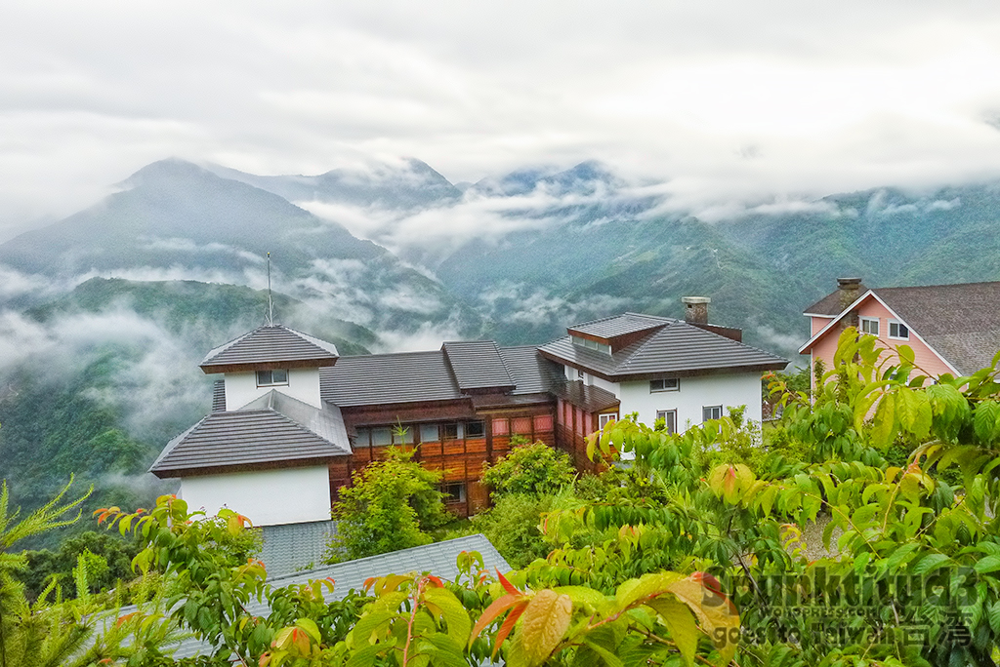
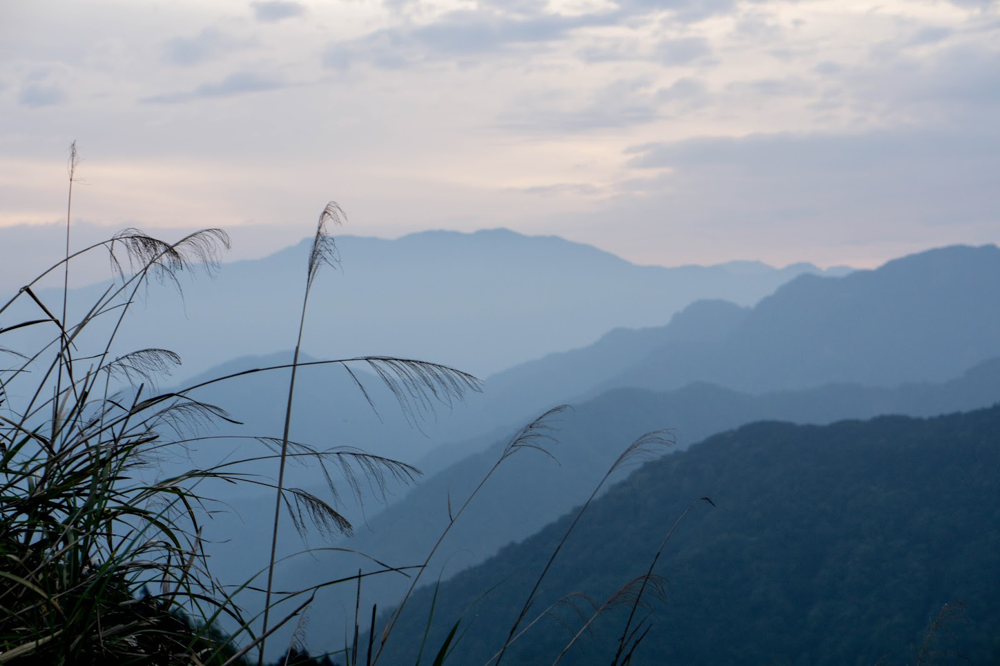
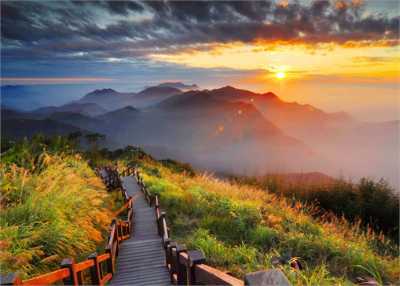
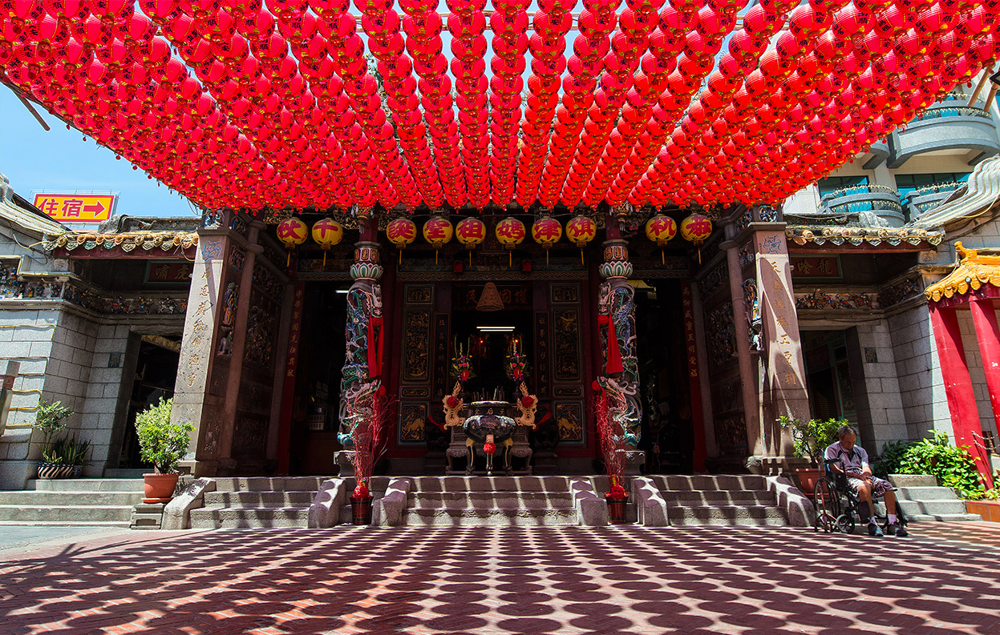
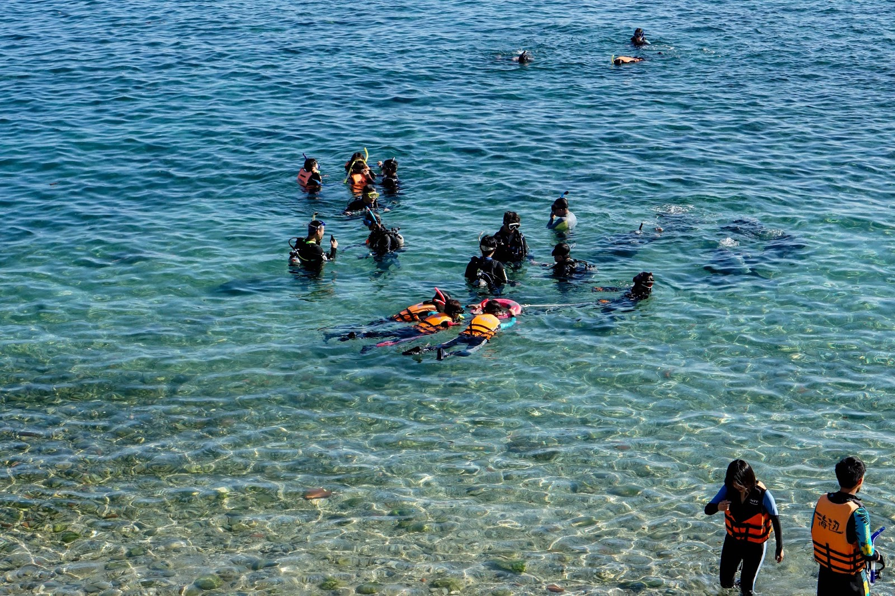

Hotel:Evergreen Laurel Hotel
| Dajia Jenn Lann Temple | Confucius Temple | National Taichung Theater |
|---|---|---|
| |
|
|
| After picking you up at the airport,you will first go to the Dajia Jenn Lann Temple. The violet jade Matzu of Jenn Lann Temple and the Golden Matzu in the basement of Matzu cultural museum are the treasures of the temple. | Then you can go to the Confucious Temple near there. A temple of Confucius or Confucian temple is a temple for the veneration of Confucius and the sages and philosophers of Confucianism in Chinese folk religion and other East Asian religions. | The next stop is the National Taichung Theater. It is an opera house although it doesn't hire any operas. You can see the magnificent buliding which is Taiwan's first opera house. Hotel:Evergreen Laurel Hotel |
| Cingjing | Hehuanshan | Alishan |
|---|---|---|
|  |  |  |
| On the second day, you will go to the Cingjing. Enjoy a fun-filled family day out at Cingjing Farm which is also known as 'Little Europe' and play with the sheep and other farm animals. It is really quite fun to be there! | After playing with the cute domestic animals, you will then see the great view of the Hehuanshan. Hehuanshan is a mountain which is especcially beautiful when it is covered with snow. You can see the sunrise and the natural scenes. | Since you have arrived hehuanshan to see the mountainic views, you can go to the Alishan. There you can see the old train and the its recreation park. You can enjoy the beauty of nature very well there. Hotel:Cinjing Resort |
| Matsu Temple | Love River | Liuhe Night Market |
|---|---|---|
|  |  |
 |
| On day three, you will go to the Chi Jin Mazu Temple, also known as the Cijin or Cihou Tianhou Temple. It is a Chinese temple to the Chinese sea goddess Mazu, the deified form of the medieval Fujianese shamaness Lin Moniang. | Then you will arrive the famous Love River or Ai River. It is a river (canal) in southern Taiwan. Love River is the spine of Kaohsiung, playing a similar role to the River Thames of London. You can feel romantic there. | The Liuhe Night Market is a must visit night market. It is one of the most popular markets in Taiwan where seafood, handicrafts, clothing, knives, cameras and live animals are sold. Hotel: Liuhe Hotel |
| Kenting beach | National Museum of Marine Biology and Aquarium | Kenting Night Market |
|---|---|---|
|  |  |
 |
| On this very 4th day, you will go to Kenting. It is famous for its beautiful beaches and plenty of differents corals. KenTing National Forest Recreation Area is the only one tropical botanical garden in Taiwan and also one of the top 10 tropical botanical gardens in the world. | Afterwards, the national museum will be you second place. The museum has three main exhibits: Waters of Taiwan, Coral Kingdom Pavilion and World Waters Pavilion. The museum also has an underwater moving track, the largest underwater tunnel in Asia. | In the evening, you can enjoy the night life in Kenting Street Night Market. Thousands of people swarm in every night, especially on weekends.Hotel: Central Kiaoshung Hotel |
| 101 | Sun Moon Lake | Yeh Liu Geo Park |
|---|---|---|
.jpg) |
 |
 |
| After breakfast, you wil go 101, the trade mark of Taiwan. The Taipei 101,formerly known as the Taipei World Financial Center, is a landmark supertall skyscraper. It exhibits a number of technologically advanced features as it provides a center for business and recreation. | Besides 101, Sun Moon Lake is also very famous. This lake is famous for its clear, sparkling blue water set against a picturesque mountain backdrop. This is the largest lake in Taiwan and a traditional spot for newlywed couples to take their honeymoon. | The last place will be the Yehliu Geopark. It is home to a number of unique geological formations including the iconic "Queen's Head". Besides the Queen's Head, other remarkable formations include Sea Candles, Fairy Shoe, Ginger Rocks, Elephant Rock, Ice Cream Rock, Kissing Rock, and Princess' Head. |
| Price List | |
|---|---|
| Numbers of people | Usual Price |
| Single | $1120 |
| Dual | $2200 |
| Triple | $3300 |
| Four and above | $1100 for each |